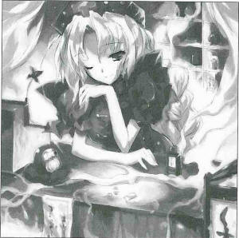
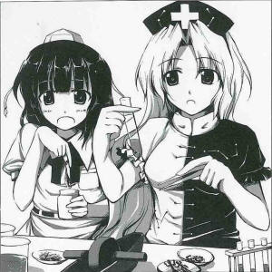

A New Dream Medicine for Modern Gensokyo
Good News for the Stressed Contemporary YoukaiGensokyo's master of medicine, Eirin Yagokoro (human [self-proclaimed]) has developed a new dream medicine for modern troubled people that lets one enjoy sweet dreams.
The name of this new drug is Kochoumugan (Butterfly Dream Pill).
It takes its name from the dream it induces, where one becomes a butterfly and enjoys oneself.
A few doses of the red pill before bed will prevent nightmares and create an enjoyable dream for a good night's sleep.
Eirin Yagokoro explains the specifics of what lead to the development of this medicine.
See, in Gensokyo, everyone are either youkai or demons or ghosts or such, so they're all fit and robust. There isn't really much of a demand for medicine for physical illnesses. These kind of beings are comprised mostly of spirit. Therefore, if they need any sort of care it would be for their mentality. The origin of the dream medicine was sparked by this realization.
The dream world is another self, says Ms. Yagokoro.
If the dream is too enjoyable, there's a chance that the real world and the dream world may switch places, so one must be careful of overdosing.
The medicine itself has existed since ancient times. In the past, there were many humans who took the medicine and could not return from the dream world. In this new formula, I've weakened the potency and reduced the side effects.
However, there are people who say that good things happen in nightmares as well.
For those people who enjoy a little thrill in their dreams, the Kochoumugan Nightmare Type is also available.
This one is a black pill, and when taken, causes nightmares to occur.
For gifts, try Moon World brand rice liquor (100% gluetinous rice, vacuum-fermented)
 Aya
It's been a while. How are the Kochoumugan sales going?
Eirin
Just a little here and there. This minor newspaper doesn't seem to have much exposure.
Aya
I'm trying my best to improve that.
Eirin
In which areas is this newspaper distributed?
Aya
Most of those who want the latest news in Gensokyo the fastest are reading it.
Eirin
Gensokyo is full of those who don't care what happens in the world as long as their personal surroundings are fine. Exactly where would there be anyone who needs information enough to get a newspaper?
Aya
...Mostly fellow tengu.
Eirin
So it's like a school newspaper.
Aya
There are other readers. For example, Kourindo's owner is a loyal subscriber.
Eirin
He's not the target audience for Kochoumugan. I doubt he's worried about nightmares.
Aya
By the way, what kind of people buy Kochoumugan?
Eirin
I can't release personal information for the sake of privacy.
Aya
I don't think who bought what is really personal information.
Eirin
That might be so. Since the purchase and selling of things is a system humans established, prevention of the flow of information reduces the efficiency of the system. Without information, a healthy market isn't possible, and shady businesses can get away with cheating. In the first place, the reason merchants say I won't leak your information is because it's just another form of advertisement, to appeal to their customers. I'm guessing what you're trying to say that unless information is more open, the only ones making a profit will benefit, yet they do not realize in doing so, the whole system will collapse eventually, right?
Aya
Well, no, I didn't say that much. But I do agree that information shouldn't be hidden.
Eirin
Like how in the past, saying Dat ting? Da lady o'er der bought 'em all jest now, don'cha know. and making the whereabouts of the products as clear as day, they may have been hoping for a possible economical development.
Aya
Why the accent? But really, let's get back on track. You don't seem like you want to tell me about your customers, after all.
Eirin
There's the puppeteer from the forest, for one.
Aya
I've tried the Kochoumugan myself, but I don't really understand the effect.
Eirin
Huh? Is that true?
Aya
I did dream of becoming a butterfly flying gracefully through the air, but whether that's an enjoyable dream or not is...
Eirin
You seem to be carefree, after all. You weren't having any problems with your dreams in the first place, right? You're not mentally exhausted enough to need therapy.
Aya
That's also true, but... I guess what I mean to say is there wasn't any sense of speed. Ever since I grew wings, I've never flown so slowly before.
Eirin
So that's what you meant. Well then, for you, please give the Nightmare Type a try. It's so fast it might even be enjoyable.
Profile:
Eirin Yagokoro
A former resident of the moon in the service of Kaguya.
A genius apothocary, she is even able to concoct the Hourai Elixir, which grants the user eternal youth.
For some reason, she hid the real full moon and replaced it with a fake not-so-full one.
Appearances:
Imperishable Night, Phantasmagoria of Flower View